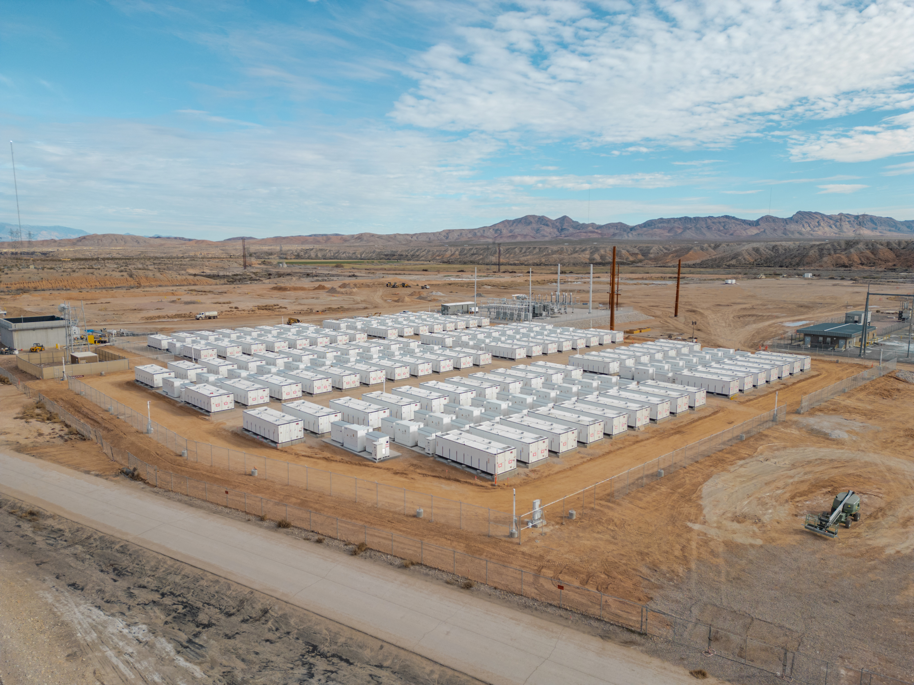

Understand
what you have.
Bring together operating history, capacity tests, and degradation assumptions to assess how usable energy could change.
Degradation & duration outlook

Battery capacity.
Better planned.

Nameplate capacity is a starting point. It isn't a lifetime plan. We're developing a planning approach that connects the battery's operating history with the realities of the site and the economics of augmentation.
For asset owners, storage engineers,Bring together operating history, capacity tests, and degradation assumptions to assess how usable energy could change.
Degradation & duration outlook
Evaluate low-voltage and medium-voltage augmentation against physical space, electrical limits, controls, and warranty constraints.
LV / MV / no-action comparison
Connect timing, cost, outage assumptions, and potential capacity recovery so engineering and finance can assess the same decision.
An investment decision memo
Start with the data you have. Make the assumptions visible. Test the options that matter.
Explore the pilotSite configuration, operating history, capacity tests, and warranty terms.
Capacity trajectories, augmentation timing, site feasibility, and commercial sensitivities.
A comparison of options, key uncertainties, and the next engineering questions to resolve.
The augmentation decision pilot
We're speaking with owners and developers of grid-scale storage about an initial pilot focused on one operating asset or late-stage project.
Discuss your projectProposed pilot scope
One asset. One capacity decision.
4 to 6 weeks, subject to scope and data readiness.
Capacity outlook, augmentation options, timing considerations, and an investment memo.
Site topology, operating and capacity-test records, warranty terms, and cost and revenue assumptions.
Founded on practical experience in battery degradation, augmentation strategy, and technical modeling.
Our work brings together energy storage and chemical engineering expertise to connect battery behavior with long-term asset decisions.
Augment-wh's initial focus is capacity and augmentation planning, with a longer-term vision for lifecycle intelligence across battery storage assets.
Connect with us on LinkedInAugment-wh is in development. We're exploring pilot projects and refining the initial capacity and augmentation planning workflow with potential customers.
The proposed pilot is an analysis and planning engagement. It does not issue dispatch commands or replace your energy management system, plant controller, or engineering approval process.
The first discussion is about available records and the decision you need to make. Data gaps, assumptions, and uncertainty help define the scope before a pilot begins.
Tell us about your project or request a quote. Email us directly or schedule a meeting.
Connect with us on LinkedIn